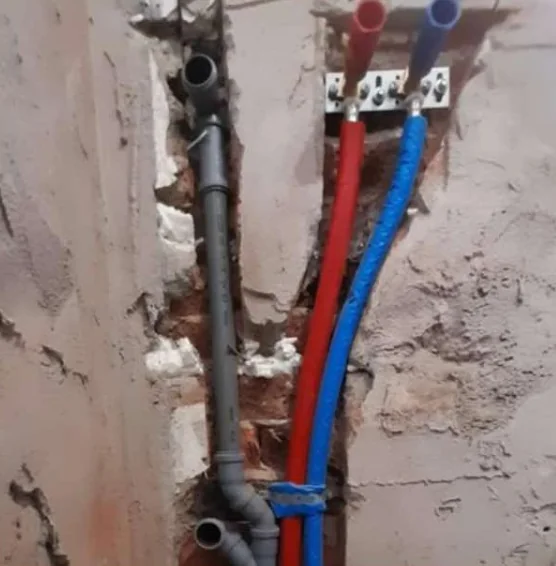
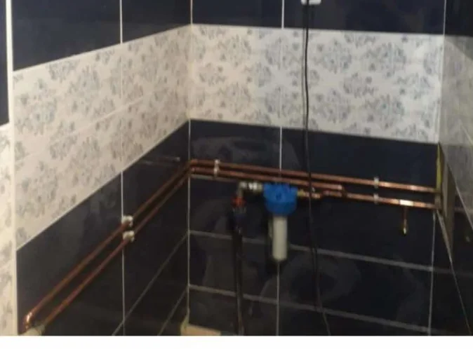

01
Vízszerelés
Vízrendszer tervezése és kivitelezése házon belül és kívül, valamint szerelvények felszerelése és cseréje.
Felszerelhető és cserélhető szerelvények:
- WC
- Kád
- Zuhany
- Mosdó
- Mosogató
- Mosogatógép
- Bidé
- Piszoár
- Mosógép
- Szárítógép
- Bojler
Ajánlatkéréskor érdemes megadni
- Mit szeretne: új vezeték kiépítését, vagy meglévő szerelvény felszerelését, cseréjét?
- Melyik szerelvényekről van szó (pl. WC, zuhany, bojler)?
- Házon belüli vagy külső vezetékszakaszról van szó?
- Fotó a jelenlegi állapotról, ha van.